pacman::p_load(sf, tmap, tidyverse)Exercise 1B: Choropleth Mapping
1. Getting Started
1.1 Install and launching R packages
The code chunk below uses p_load() of pacman package to check if sf , tmap, and tidyverse packages are installed into the R environment. If they are, then they will be launched into R.
Note: readr, tidyr, and dplyr are part of tidyverse package
1.2 Importing data
In this section, the following data will be imported into R through st_read() of sf package to create the choropleth map:
MP14_SUBZONE_WEB_PL, in ESRI shapefile format, retrieved from data.gov.sgrespopagsex2010to2020.csv- Singapore Residents by Planning Area/Subzone, Age Group, Sex, and Type of Dwelling, June 2011-2020, retrieved from Department of Statistics, Singapore.
1.2.1 Importing Geospatial Data into R
We will be using st_read() function of sf package to import MP14_SUBZONE_WEB_PL shapefile into R as a simple feature data frame called mpsz.
mpsz <- st_read(dsn = "data/geospatial",
layer = "MP14_SUBZONE_WEB_PL")Reading layer `MP14_SUBZONE_WEB_PL' from data source
`/Users/smu/Rworkshop/jiawenoh/ISSS624/Hands-on_Ex/Hands-on_Ex01/data/geospatial'
using driver `ESRI Shapefile'
Simple feature collection with 323 features and 15 fields
Geometry type: MULTIPOLYGON
Dimension: XY
Bounding box: xmin: 2667.538 ymin: 15748.72 xmax: 56396.44 ymax: 50256.33
Projected CRS: SVY21#to examine the content
mpszSimple feature collection with 323 features and 15 fields
Geometry type: MULTIPOLYGON
Dimension: XY
Bounding box: xmin: 2667.538 ymin: 15748.72 xmax: 56396.44 ymax: 50256.33
Projected CRS: SVY21
First 10 features:
OBJECTID SUBZONE_NO SUBZONE_N SUBZONE_C CA_IND PLN_AREA_N
1 1 1 MARINA SOUTH MSSZ01 Y MARINA SOUTH
2 2 1 PEARL'S HILL OTSZ01 Y OUTRAM
3 3 3 BOAT QUAY SRSZ03 Y SINGAPORE RIVER
4 4 8 HENDERSON HILL BMSZ08 N BUKIT MERAH
5 5 3 REDHILL BMSZ03 N BUKIT MERAH
6 6 7 ALEXANDRA HILL BMSZ07 N BUKIT MERAH
7 7 9 BUKIT HO SWEE BMSZ09 N BUKIT MERAH
8 8 2 CLARKE QUAY SRSZ02 Y SINGAPORE RIVER
9 9 13 PASIR PANJANG 1 QTSZ13 N QUEENSTOWN
10 10 7 QUEENSWAY QTSZ07 N QUEENSTOWN
PLN_AREA_C REGION_N REGION_C INC_CRC FMEL_UPD_D X_ADDR
1 MS CENTRAL REGION CR 5ED7EB253F99252E 2014-12-05 31595.84
2 OT CENTRAL REGION CR 8C7149B9EB32EEFC 2014-12-05 28679.06
3 SR CENTRAL REGION CR C35FEFF02B13E0E5 2014-12-05 29654.96
4 BM CENTRAL REGION CR 3775D82C5DDBEFBD 2014-12-05 26782.83
5 BM CENTRAL REGION CR 85D9ABEF0A40678F 2014-12-05 26201.96
6 BM CENTRAL REGION CR 9D286521EF5E3B59 2014-12-05 25358.82
7 BM CENTRAL REGION CR 7839A8577144EFE2 2014-12-05 27680.06
8 SR CENTRAL REGION CR 48661DC0FBA09F7A 2014-12-05 29253.21
9 QT CENTRAL REGION CR 1F721290C421BFAB 2014-12-05 22077.34
10 QT CENTRAL REGION CR 3580D2AFFBEE914C 2014-12-05 24168.31
Y_ADDR SHAPE_Leng SHAPE_Area geometry
1 29220.19 5267.381 1630379.3 MULTIPOLYGON (((31495.56 30...
2 29782.05 3506.107 559816.2 MULTIPOLYGON (((29092.28 30...
3 29974.66 1740.926 160807.5 MULTIPOLYGON (((29932.33 29...
4 29933.77 3313.625 595428.9 MULTIPOLYGON (((27131.28 30...
5 30005.70 2825.594 387429.4 MULTIPOLYGON (((26451.03 30...
6 29991.38 4428.913 1030378.8 MULTIPOLYGON (((25899.7 297...
7 30230.86 3275.312 551732.0 MULTIPOLYGON (((27746.95 30...
8 30222.86 2208.619 290184.7 MULTIPOLYGON (((29351.26 29...
9 29893.78 6571.323 1084792.3 MULTIPOLYGON (((20996.49 30...
10 30104.18 3454.239 631644.3 MULTIPOLYGON (((24472.11 29...1.2.2 Importing Attribute Data into R
We will be using read_csv() function of readr package to import respopagsex2010to2020.csv into R and save the file as a dataframe called popdata.
popdata <- read_csv("data/aspatial/respopagesextod2011to2020.csv")1.2.3 Data Preparation
Before we prepared for a thematic map, we would need to prepare a data table with year 2020 values. The data table should include the variables PA, SZ, YOUNG, ECONOMY ACTIVE, AGED, TOTAL, DEPENDENCY.
YOUNG: age group 0 to 4 until age groyup 20 to 24,
ECONOMY ACTIVE: age group 25-29 until age group 60-64,
AGED: age group 65 and above,
TOTAL: all age group, and
DEPENDENCY: the ratio between young and aged against economy active group
1.2.3.1 Data Wrangling
The following data wrangling and transformation functions will be used:
pivot_wider()of tidyr package, andmutate(),filter(),group_by(), andselect()of dplyr package
Show the code
popdata2020 <- popdata %>%
filter(Time == 2020) %>%
group_by(PA, SZ, AG) %>%
summarise(`POP` = sum(`Pop`)) %>%
ungroup()%>%
pivot_wider(names_from=AG,
values_from=POP) %>%
mutate(YOUNG = rowSums(.[3:6])
+rowSums(.[12])) %>%
mutate(`ECONOMY ACTIVE` = rowSums(.[7:11])+
rowSums(.[13:15]))%>%
mutate(`AGED`=rowSums(.[16:21])) %>%
mutate(`TOTAL`=rowSums(.[3:21])) %>%
mutate(`DEPENDENCY` = (`YOUNG` + `AGED`)
/`ECONOMY ACTIVE`) %>%
select(`PA`, `SZ`, `YOUNG`,
`ECONOMY ACTIVE`, `AGED`,
`TOTAL`, `DEPENDENCY`)1.2.3.2 Joining the attribute data and geospatial data
After the transformation, we will need to convert the values in PA and SZ fields to uppercase to standardize the fields. PA and SZ fields are made up of upper-and lowercase while SUBZONE_N and PLN_AREA_N are in uppercase.
popdata2020 <- popdata2020 %>%
mutate_at(.vars = vars(PA, SZ),
.funs = funs(toupper)) %>%
filter(`ECONOMY ACTIVE` > 0)Thereafter, left_join() of dplyr is used to join the geographical data and attribute table using planning subzone (e.g. SUBZONE_N and SZ as the common identifier)
mpsz_pop2020 <- left_join(mpsz, popdata2020,
by = c("SUBZONE_N" = "SZ"))By using the code chunk below, we can write a .rds file to save data into R data format.
write_rds(mpsz_pop2020, "data/aspatial/mpszpop2020.rds")2. Choropleth Mapping Geospatial Data using tmap
Choropleth Mapping involves the symbolisation of enumeration units using area patterns or graduated colors. In this section, we will plot functional and truthful choropleth maps through tmap package.
There are two approaches that we could used to prepare thematic map:
Plotting a thematic map quickly using
qtm()Plotting highly customisable thematic map by using tmap elements
2.1 Plot Choropleth map using qtm()
qtm() provides the quickest way to draw a choropleth map. It is concise and provides a good default visualization as seen in the code chunk below.
Show the code
tmap_mode("plot")
qtm(mpsz_pop2020,
fill = "DEPENDENCY")
Learning points:
Tmap_mode()
“Plot” is used to produce static map.
View” is used to produce interactive mode
fill argument is used to map the attribute (i.e., Dependency)
Hard to control the aesthetics of individual layers
2.2 Plot using tmap’s elements
Although we are able to plot quickly and easily through qtm(), we are not able to draw a high quality cartographic choropleth map. As seen in the code chunk below, tmap’s drawing elements are used to add area patterns or graduated colors.
2.2.1 Drawing a base map
Step 1: To begin building the block of tmap, we will used tm_shape() to define the input data and tm_polygons() to draw the planning subzone polygons.
Show the code
tm_shape(mpsz_pop2020) +
tm_polygons()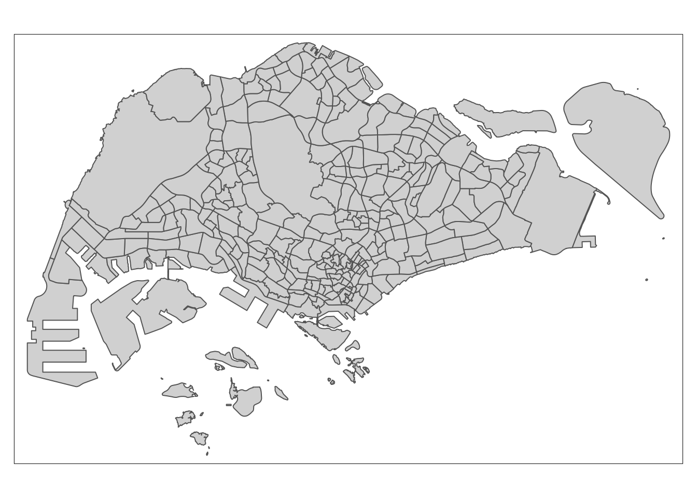
2.2.2 Use tm_polygons()
Step 2: To show the geographical distribution of a selected variable by planning subzone, we will assign the target variable such as Dependency to tm_polygons(). Note: default color is Yl0rRd of ColorBrewer. By default, missing value will be shaded in grey.
Show the code
tm_shape(mpsz_pop2020)+
tm_polygons("DEPENDENCY")
2.2.3 Use tm_fill() and tm_border()
Step 2: Instead of using tm_polygons() in section 2.2.2, tm_fill() could be used as well. Notably, tm_polygons() is a wraper of tm_fill() and tm_borders(). tm_fill() shades the polygons by default colour scheme whereas tm_borders() add the borders of the shapefile.
Show the code
tm_shape(mpsz_pop2020)+
tm_fill("DEPENDENCY")
To add boundary to the planning subzone, tm_borders() will be used.
Show the code
tm_shape(mpsz_pop2020)+
tm_fill("DEPENDENCY") +
tm_borders(lwd = 0.1, alpha = 1)
Learning Points:
‘alpha’ is used to define transparency (range from 0 to 1) with 1 as default (non-transparent)
‘col’ refers to border color
‘lwd’ refers to border line width. Default as 1.
‘lty’ refers to border line type. Default as solid.
2.2.4 Final Choropleth Map
Step 3: After adding the base map, planning subzone, colors, borders, the code chunk below reveals the finalized output with functional choropleth map.
Show the code
tm_shape(mpsz_pop2020)+
tm_fill("DEPENDENCY",
style = "quantile",
palette = "Blues",
title = "Dependency ratio") +
tm_layout(main.title = "Distribution of Dependency Ratio by planning subzone",
main.title.position = "center",
main.title.size = 1.2,
legend.height = 0.45,
legend.width = 0.35,
frame = TRUE) +
tm_borders(alpha = 0.5) +
tm_compass(type="8star", size = 2) +
tm_scale_bar() +
tm_grid(alpha =0.2) +
tm_credits("Source: Planning Sub-zone boundary from Urban Redevelopment Authorithy (URA)\n and Population data from Department of Statistics DOS",
position = c("left", "bottom"))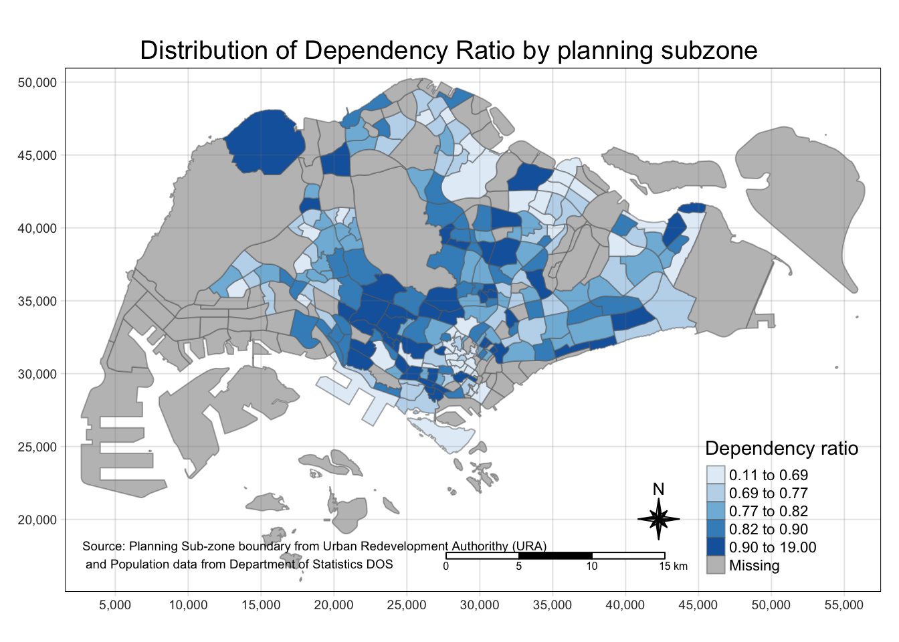
2.3 Data Classification Methods of tmap
tmap provides a total of 10 data classifications methods, namely- fixed, sd, equal, pretty (default), quantile, kmeans, hclust, bclust, fisher, and jenks. To define a data classification method, the style argument of tm_fill() or tm_polygons() will be used.
2.3.1 Built-in classification methods
The code chunk below shows a quantile data classification that used 5 classes.
Show the code
tm_shape(mpsz_pop2020)+
tm_fill("DEPENDENCY",
n = 5,
style = "jenks") +
tm_borders(alpha = 0.5)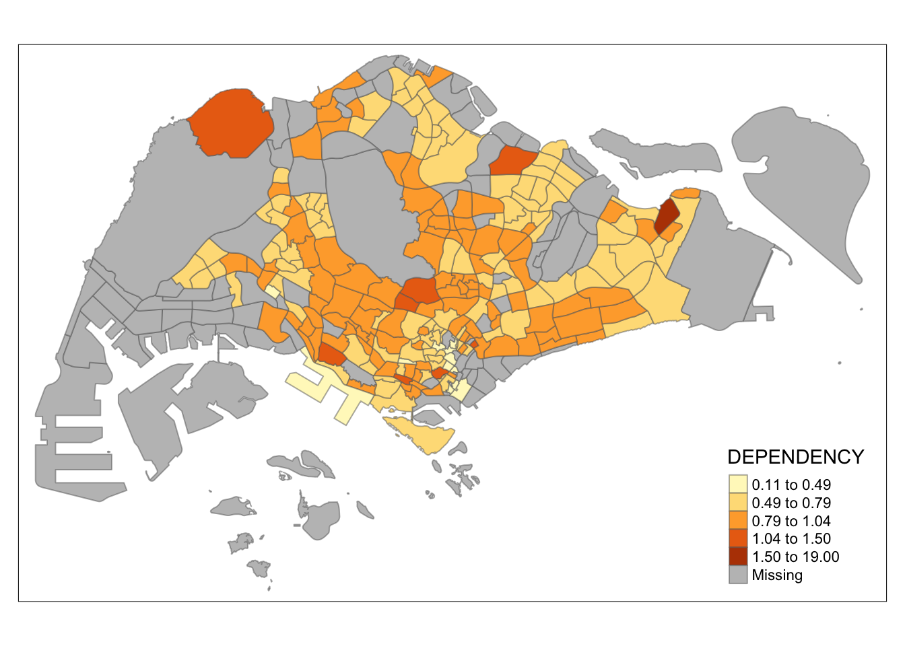
By changing the style, the distribution will look different. The code chunk below used equal data classification method.
Show the code
tm_shape(mpsz_pop2020)+
tm_fill("DEPENDENCY",
n = 5,
style = "equal") +
tm_borders(alpha = 0.5)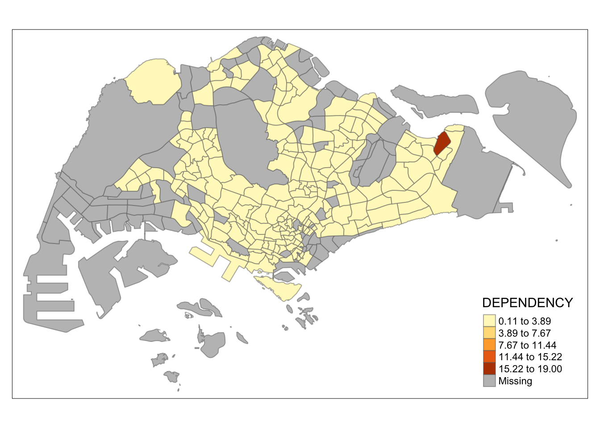
In comparison, quantile method is evenly distributed. In addition, we observed that by increasing the number of classes, the graduated colors become more distinct.
Show the code
tm_shape(mpsz_pop2020)+
tm_fill("DEPENDENCY",
n = 20,
style = "jenks") +
tm_borders(alpha = 0.5)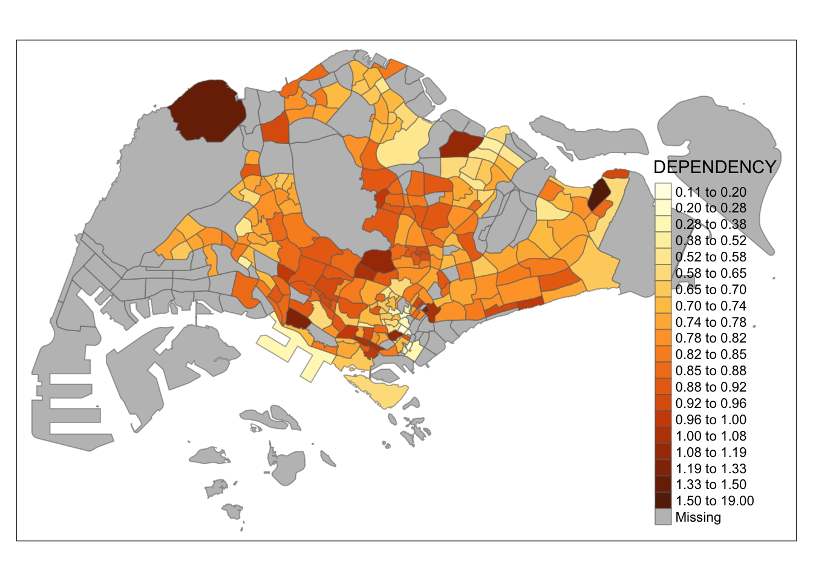
2.3.2 Custome Break
For all the built-in styles, the category breaks are computed internally. In order to override these defaults, the breakpoints can be set explicitly by means of the breaks argument to the tm_fill(). It is important to note that, in tmap the breaks include a minimum and maximum. As a result, in order to end up with n categories, n+1 elements must be specified in the breaks option (the values must be in increasing order).
Before we get started, it is always a good practice to get some descriptive statistics on the variable before setting the break points. Code chunk below will be used to compute and display the descriptive statistics of DEPENDENCY field.
summary(mpsz_pop2020$DEPENDENCY) Min. 1st Qu. Median Mean 3rd Qu. Max. NA's
0.1111 0.7147 0.7866 0.8585 0.8763 19.0000 92 With reference to the results above, we set break point at 0.60, 0.70, 0.80, and 0.90. In addition, we also need to include a minimum and maximum, which we set at 0 and 100. Thus, our breaks vector is c(0, 0.60, 0.70, 0.80, 0.90, 1.00).
We will be able to plot the choropleth map by using the code chunk below:
Show the code
tm_shape(mpsz_pop2020)+
tm_fill("DEPENDENCY",
breaks = c(0, 0.60, 0.70, 0.80, 0.90, 1.00)) +
tm_borders(alpha = 0.5)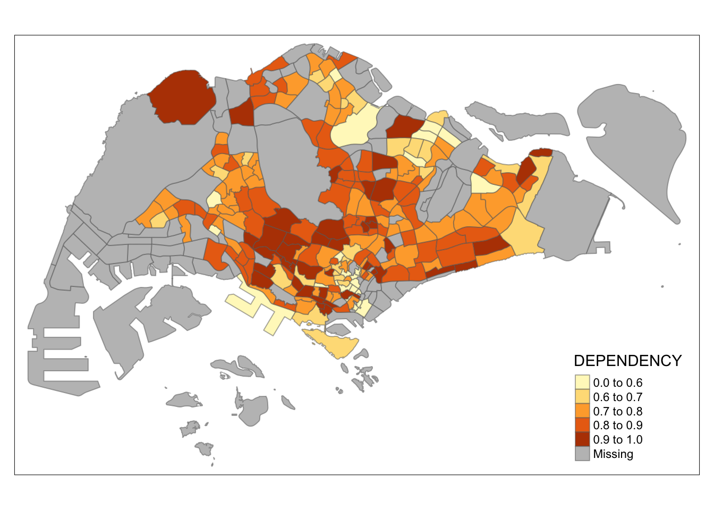
2.4 Color Scheme
tmap supports color ramps either defined by the user or a set of predefined color ramps from the RColorBrewer package.
2.4.1 RColorBrewer Package
To change the colour, we assign the preferred colour to palette argument of tm_fill() as shown in the code chunk below.
Show the code
tm_shape(mpsz_pop2020)+
tm_fill("DEPENDENCY",
n = 6,
style = "quantile",
palette = "Blues") +
tm_borders(alpha = 0.5)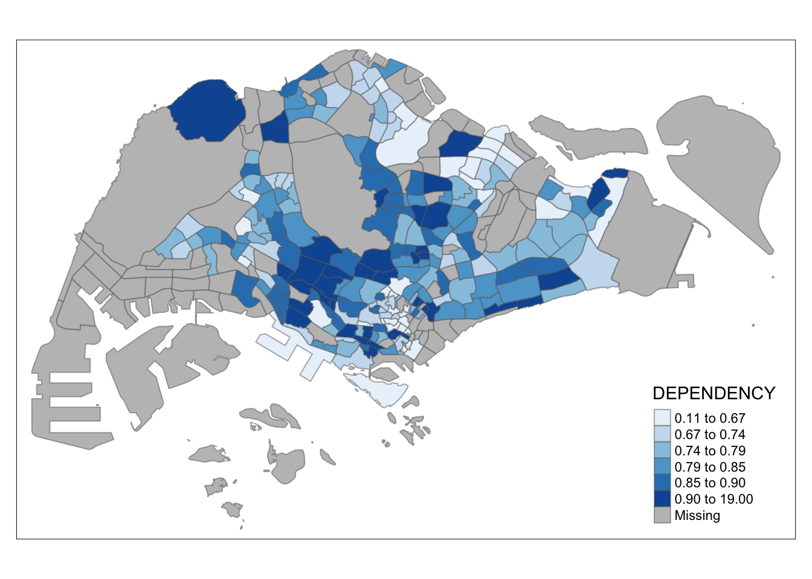
Tip
- : reverse the color shading.
2.5 Map Layouts
As covered in previous section, the palette and break-points could affect how the map looks. Moreover, the combination of all map elements such as objects to be mapped, the title, the scale bar, the compass, margins and aspects ratios create a cohesive map.
2.5.1 Map Legend
In tmap, several legend options are provided to change the placement, format and appearance of the legend.
Show the code
tm_shape(mpsz_pop2020)+
tm_fill("DEPENDENCY",
style = "jenks",
palette = "Blues",
legend.hist = TRUE,
legend.is.portrait = TRUE,
legend.hist.z = 0.1) +
tm_layout(main.title = "Distribution of Dependency Ratio by planning subzone \n(Jenks classification)",
main.title.position = "center",
main.title.size = 1,
legend.height = 0.45,
legend.width = 0.35,
legend.outside = FALSE,
legend.position = c("right", "bottom"),
frame = FALSE) +
tm_borders(alpha = 0.5)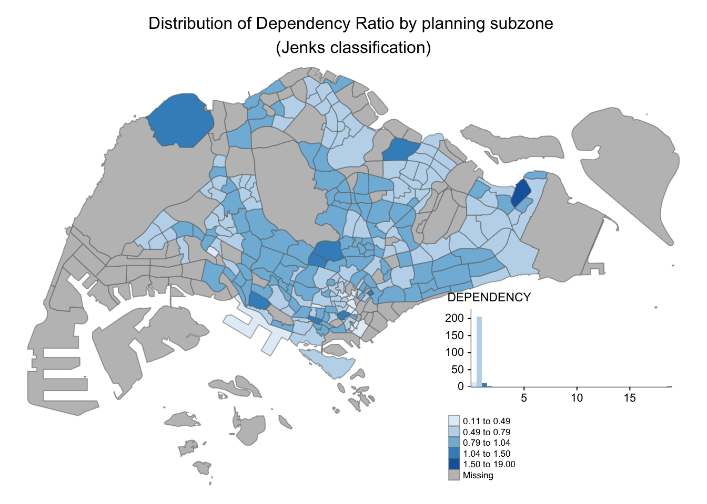
2.5.2 Map Style
tmap allows a wide variety of layout settings to be changed. They can be called by using tmap_style(). We will be using the classic style for the example below:
Show the code
tm_shape(mpsz_pop2020)+
tm_fill("DEPENDENCY",
style = "quantile",
palette = "-Greens") +
tm_borders(alpha = 0.5) +
tmap_style("classic")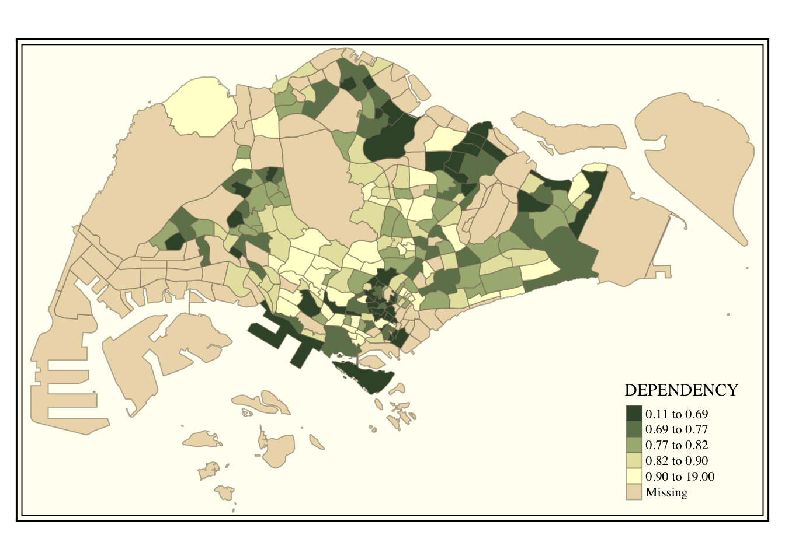
2.5.3 Cartographic Furniture
tmap also also provides arguments to draw other map furniture such as compass, scale bar and grid lines. tm_compass(), tm_scale_bar() and tm_grid() are used to add compass, scale bar and grid lines onto the choropleth map in the code chunk below:
Show the code
tm_shape(mpsz_pop2020)+
tm_fill("DEPENDENCY",
style = "quantile",
palette = "Blues",
title = "No. of persons") +
tm_layout(main.title = "Distribution of Dependency Ratio \nby planning subzone",
main.title.position = "center",
main.title.size = 1.2,
legend.height = 0.45,
legend.width = 0.35,
frame = TRUE) +
tm_borders(alpha = 0.5) +
tm_compass(type="8star", size = 2) +
tm_scale_bar(width = 0.15) +
tm_grid(lwd = 0.1, alpha = 0.2) +
tm_credits("Source: Planning Sub-zone boundary from Urban Redevelopment Authorithy (URA)\n and Population data from Department of Statistics DOS",
position = c("left", "bottom"))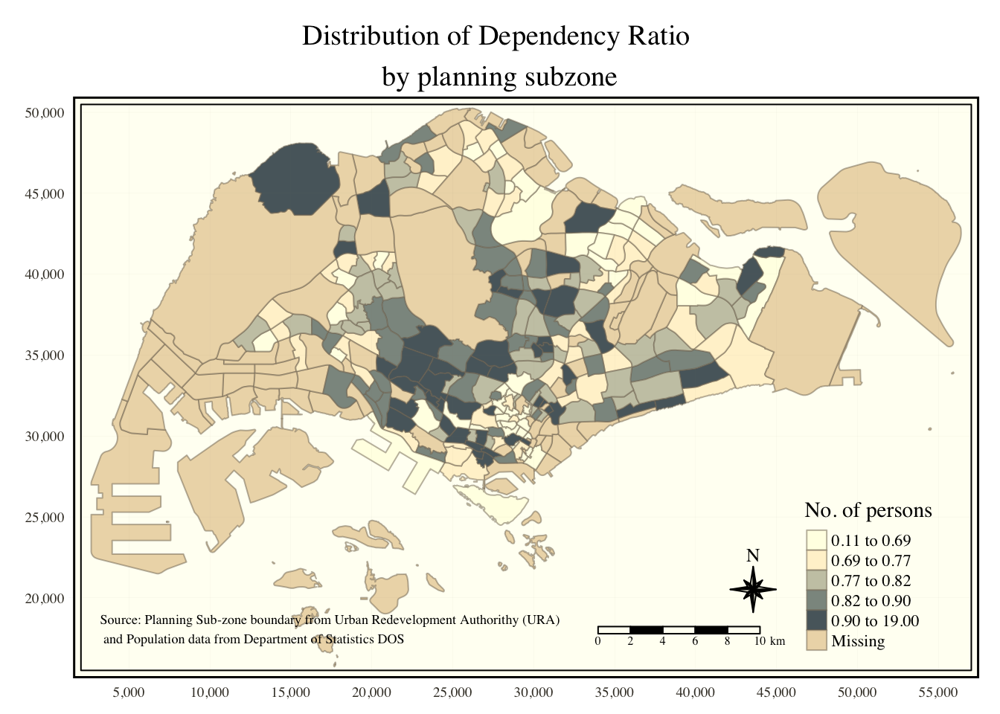
2.5.3.1. Reset Default Style
If needed, the code chunk below helps to reset the default style.
Other available styles are: "gray", "natural", "cobalt", "col_blind", "albatross", "beaver", "bw", "classic", "watercolor" tmap_style("white")2.6 Facet Maps
Maps could be arrange side-by-side into multiple small maps, stacked vertically or horizontally. It enable the visualization of how spatial relationships changes with respect to another variable, such as time.
In tmap, small multiple maps can be plotted in three ways:
by assigning multiple values to at least one of the asthetic arguments,
by defining a group-by variable in
tm_facets(),andby creating multiple stand-alone maps with
tmap_arrange().
2.6.1 Assign multiple values
In this example, small multiple choropleth maps are created by defining ncols in tm_fill() :
Show the code
tm_shape(mpsz_pop2020)+
tm_fill(c("YOUNG", "AGED"),
style = "equal",
palette = "Blues") +
tm_layout(legend.position = c("right", "bottom")) +
tm_borders(alpha = 0.5) +
tmap_style("white")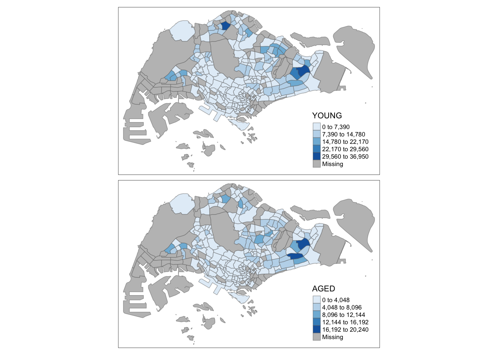
Likewise, we could assign multiple values to at least one of the aesthetic arguments and highlight in different color.
Show the code
tm_shape(mpsz_pop2020)+
tm_polygons(c("DEPENDENCY","AGED"),
style = c("equal", "quantile"),
palette = list("Blues","Greens")) +
tm_layout(legend.position = c("right", "bottom"))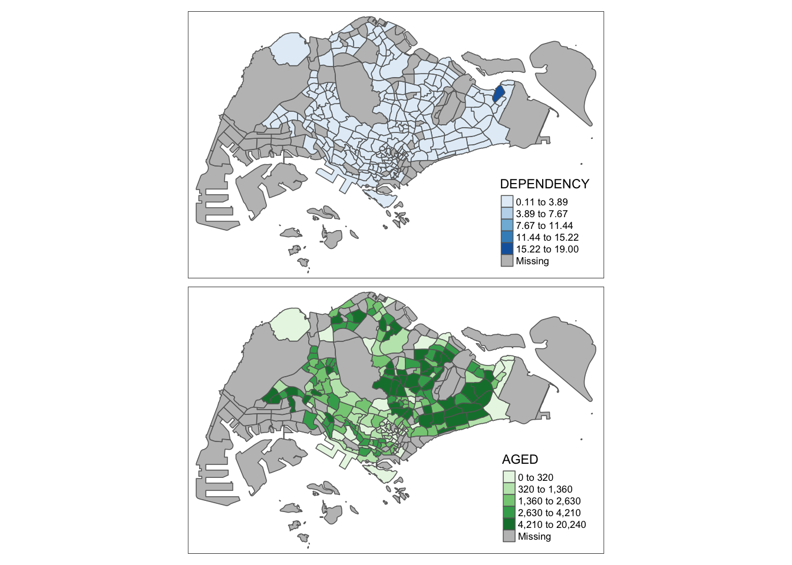
2.6.2 Group-by variable in tm_facets()
Multiple small choropleth maps are created by using tm_facets() as seen in the code below:
Show the code
tm_shape(mpsz_pop2020) +
tm_fill("DEPENDENCY",
style = "quantile",
palette = "Blues",
thres.poly = 0) +
tm_facets(by="REGION_N",
free.coords=TRUE,
drop.shapes=TRUE) +
tm_layout(legend.show = FALSE,
title.position = c("center", "center"),
title.size = 20) +
tm_borders(alpha = 0.5)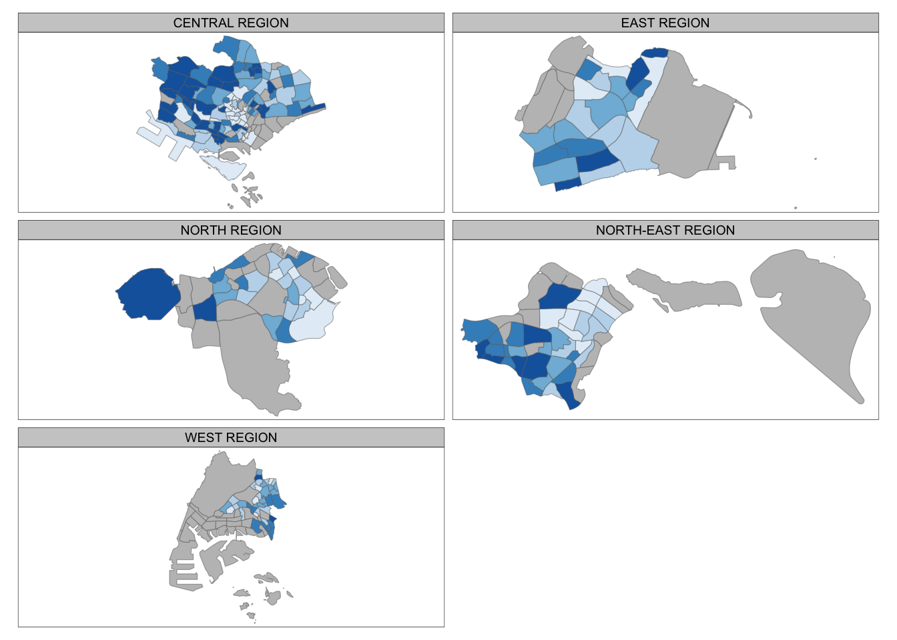
2.6.3 Multiple stand-alone maps with tmap_arrange()
Multiple small choropleth maps are created by creating multiple stand-alone maps with tmap_arrange() as seen in the code below:
Show the code
youngmap <- tm_shape(mpsz_pop2020)+
tm_polygons("YOUNG",
style = "quantile",
palette = "Blues")
agedmap <- tm_shape(mpsz_pop2020)+
tm_polygons("AGED",
style = "quantile",
palette = "Blues")
tmap_arrange(youngmap, agedmap, asp=1, ncol=2)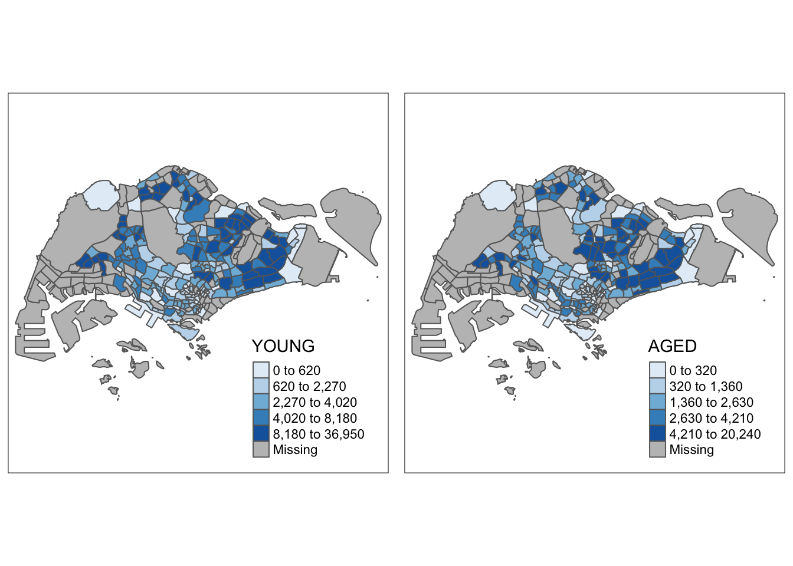
2.7 Mapping Spatial Object Meeting a Selection Criterion
Instead of creating multiple choropleth map, we can use selection function to map spatial objections meeting the selection criterion.
Show the code
tm_shape(mpsz_pop2020[mpsz_pop2020$REGION_N=="CENTRAL REGION", ])+
tm_fill("DEPENDENCY",
style = "quantile",
palette = "Blues",
legend.hist = TRUE,
legend.is.portrait = TRUE,
legend.hist.z = 0.1) +
tm_layout(legend.outside = TRUE,
legend.height = 0.45,
legend.width = 5.0,
legend.position = c("right", "bottom"),
frame = FALSE) +
tm_borders(alpha = 0.5)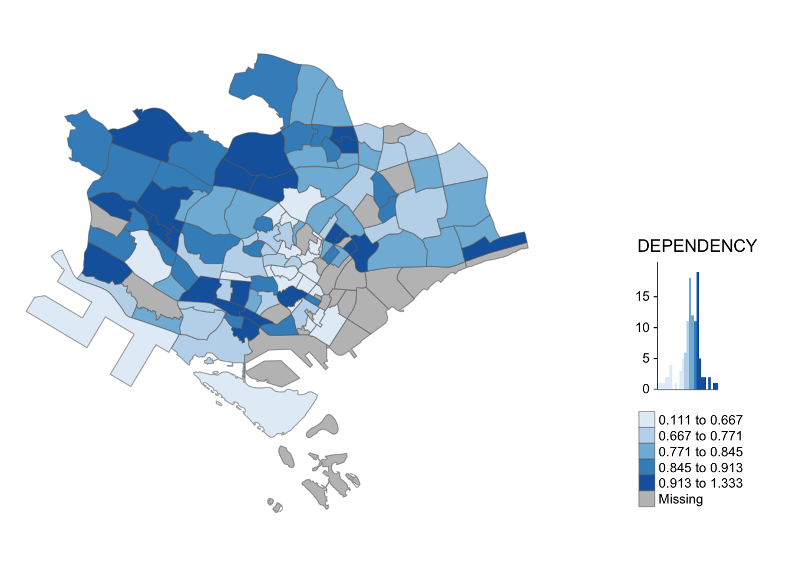